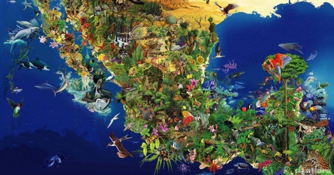
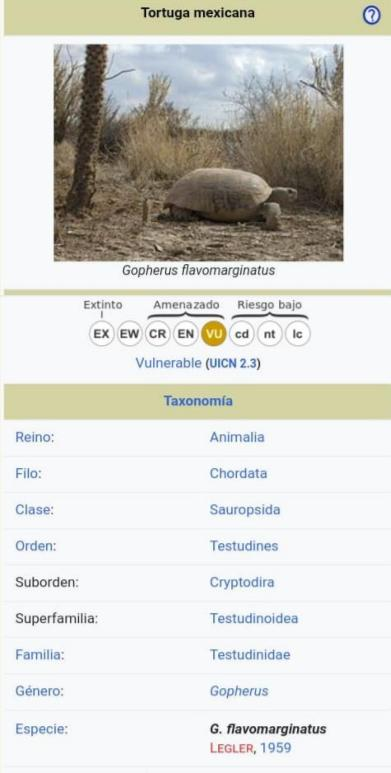
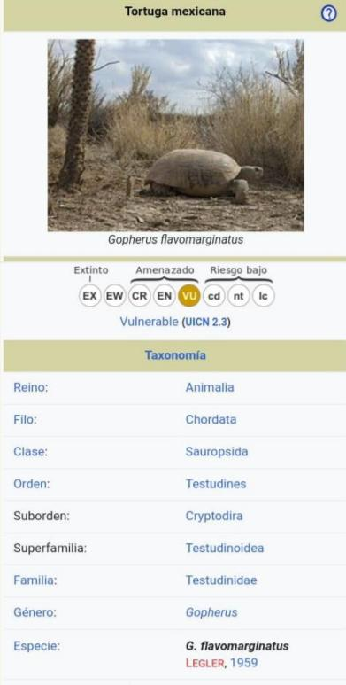

- TORTUGA BOLSON -
Español: Tortuga del Bolsón, Tortuga Grande, Tortuga Llanero, Tortuga Topo, Excavadora mexicana o tortuga del Bolsón de Mapimí. Ingles: Mexican Gopher Tortoise;Boison Tortoise, Bolson Tortoise, Mexican Giant Tortoise, Yellow-Bordered Tortoise.
La tortuga mexicana, tortuga de Mapimí, tortuga del Bolsón, tortuga grande, tortuga llanero o tortuga topo (Gopherus flavomarginatus) es una tortuga terrestre endémica de México. De las cuatro especies del género Gopherus de América del Norte es la más grande, con una longitud de unos 46 cm. Vive en una región del desierto de Chihuahua conocida como Bolsón de Mapimí, que se encuentra en la unión de los estados de Chihuahua, Durango y Coahuila. Fue descubierta en 1959. En 1979 se creó la Reserva de la Biosfera de Mapimí con 340,000 hectáreas para proteger esta tortuga y otras especies únicas de flora y fauna de Bolsón de Mapimí. A pesar de esta designación, la ganadería y la minería siguen presentes en la Reserva. Esta clasificada en Peligro de Extinción
MORFOLOGIA

Es la tortuga terrestre más grande de Norteamérica, alcanza aproximadamente los 40 cm delongitud y un peso de 12 Kg. Es endémica de la desértica región conocida como Bolsón de Mapimí, en el norte de México; y en este suelo arcilloso cava sus profundas madrigueras para protegerse de sus depredadores y regular la temperatura de su cuerpo. El carapacho alcanza una longitud de unos 37 cm. El peto no tiene charnelas. Pueden llegar a vivir de 80 a 100 años.
DIMORFISMO SEXUAL
Los machos adultos presentan la cola más larga y gruesa que las hembras.
TAMAÑO
Alcanza los 40 cm, es la tortuga mas grande de Norteamérica. Ambos sexos alcanzan un tamaño similar.
DISTRIBUCION
Esta especie es endémica de México. Su distribución se limita al sur de Chihuahua, sur de Coahuila y norte de Durango.
HABITAT
Las tortugas Bolsón prefieren terrenos llanos o con pendientes suaves, suelos de textura fina. Estas áreas generalmente se corresponden con llanuras marginales de inundación, En cuanto a la altitud de su hábitat esta en el rango entre 1.000 y 1.400 m de altitud.
REPRODUCCION
Alcanza la madurez sexual al adquirir un tamaño de 25 cm y de 15 a 20 años de edad. Durante la temporada de lluvias, las tortugas emergen de sus madrigueras para tomar hasta medio litro de agua, suficiente para mantenerlas vivas un año más en el desierto. Después de esta temporada, se aparean, establecen sus nidos y desovan. A diferencia de las tortugas marinas que pueden poner cientos de huevos, las tortugas de Mapimí desovan solo de 12 a 15 huevos, y solo 3% de estos tienen éxito, ya que tanto huevos como tortugas recién nacidas son presa fácil de cuervos, coyotes, tejones, zorrillos, corre caminos y halcones.
ALIMENTACION
Son exclusivamente herbívoras, alimentándose de una variedad de gramíneas, arbustos y hierbas.
ESTADO DE CONSERVACION
La investigación más reciente, publicada en 1991 a partir de datos recogidos en 1983, estima que menos de 10.000 tortugas permanecen en la naturaleza. Las poblaciones han disminuido debido principalmente a la excesiva recogida de alimentos y el comercio de mascotas. La incursión de las carreteras, los ferrocarriles y el desarrollo agrícola ha acelerado el declive de la especie en los últimos 40 años. En la parte central de su área de distribución son muy conscientes del estatus de protección de la tortuga y la ayuda en su conservación. Sin embargo, en la parte noreste de su hábitat, cerca de la Sierra Mojada, las poblaciones de la tortuga son bajas. Se cree que las tortugas están siendo recogidas y consumidas en este ámbito. Además, extensas operaciones de desbroce se realizan para dar paso a la ganadería. En 2008, tras la construcción de plantas de etanol con subsidio federal, grandes campos de cultivo de maíz comenzaron a cultivarse en la Reserva de la Biosfera de Mapimí. Los campos han sido cultivados en el hábitat de la tortuga, a pesar de su estatus de protección.


 
